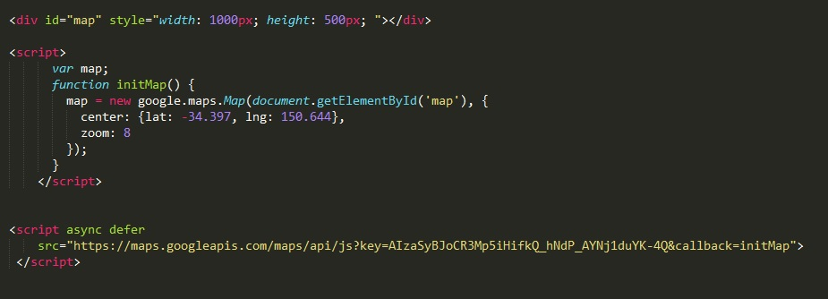

Добавление google карт осуществляется при помощи подключения API
Рассмотрим HTML код:
Сначала добавляем в документ блок div в который и будут помещаться наши карты. Этот блок должен иметь три свойства. id="map", высоту и ширину. Если мы не зададим высоту и ширину то наш блок будем площадью 0 пикселей, и мы ничего не увидим.
Тепррь нам необходимо подключить скрипт с API кодом. Этот код копируется с сайта
Далее выделаем облать под скрипт JavaScript и добавляем туда функцию initMap. У этой функции два параметра:
В разделе document.getElementById('map') в одинарных кавычках мы указываем id нашего блока div